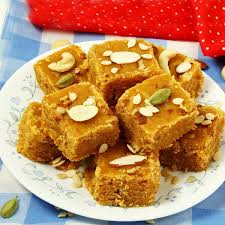

|

|
સામગ્રી:
- 2 કપ ઘઉંનો લોટ (ઘી નાંખીને ભેળેલો)
- 1 કપ ઘી
- 1 1/2 કપ ખાંડ
- 1/2 કપ દૂધ
- 2-3 એલચી પાવડર
- કેસર (વૈકલ્પિક)
- સુકા મેવાં (કાજૂ, બદામ)
બનાવવાની રીત:
- લોટને ઘી અને દૂધ સાથે મિક્સ કરીને નરમ બનાવી લો અને થોડું આરામ દેવું.
- એક પેનમાં ઘી ગરમ કરો અને તેમાં તૈયાર લોટ નાખીને ધીમા તાપે ભૂનો.
- લોટ સુવાસ આપવા લાગે ત્યાં સુધી સાંતળો.
- અલગ પેનમાં ખાંડ અને પાણી લઈને એક તાર ની ચાસણી બનાવો.
- લોટમાં ચાસણી ઉમેરી સારી રીતે મિક્સ કરો.
- એલચી પાવડર અને મેવાં ઉમેરો.
- તૈયાર મિશ્રણને થાળીમાં પાથરો અને થોડીવાર ઠંડું થવા દો.
- પછી કટ કરી સર્વ કરો.
વિડીયો જુઓ:
મોહનથાળ બનાવવાની વિડીયો
|